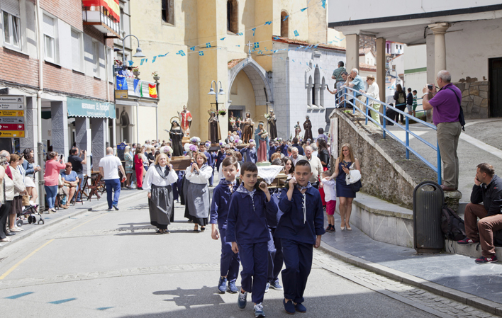
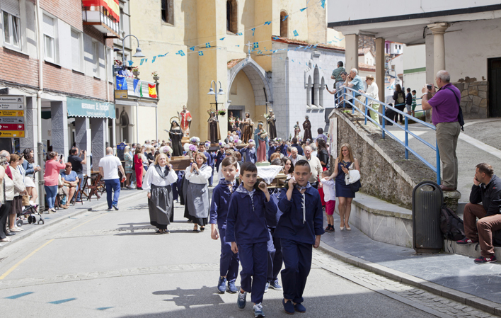

BIENVENIDOS A LAS FIESTAS DE CUDILLERO
HISTORIA
Las fiestas de Cudillero tienen sus raíces en la tradición marinera del pueblo. Desde hace siglos, los pescadores y sus familias honran a San Pedro, patrón de los marineros, y celebran la llegada del verano con música, procesiones y actividades culturales. Esta combinación de devoción y celebración ha mantenido viva la identidad del pueblo a lo largo del tiempo.
TRADICIONES Y CULTURA
L'AMURAVELA
El acto central de las fiestas donde se recita un sermón humorístico en pixueto sobre los hechos más importantes de la villa durante el año.
PROCESIONES MARINERAS
Imágenes religiosas recorren las calles hasta llegar al puerto, acompañadas de música de gaitas y charangas locales.
BAUTIZO PIXUETO
Una tradición única donde cualquier visitante puede convertirse en pixueto y recibir su diploma oficial de la villa.
VERBENAS Y MÚSICA
Durante toda la fiesta se celebran actuaciones musicales en la plaza y el puerto, con grupos locales y música tradicional.
GASTRONOMÍA LOCAL
Se pueden degustar platos típicos asturianos como el bollu preñau y pescados frescos del Cantábrico, que llenan de sabor las fiestas.
GALERÍA DE FOTOS

 



.jpg)